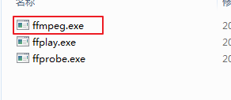
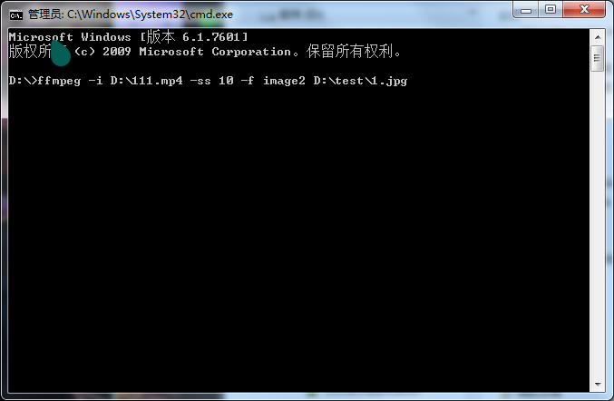
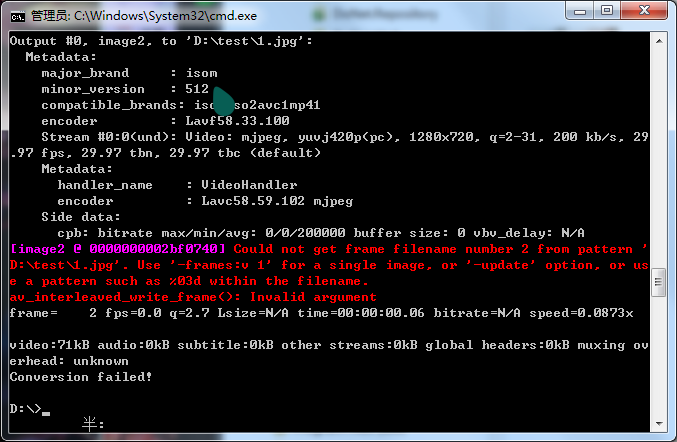

首先下载 ffmpeg http://ffmpeg.org/
注意一定要从官网下载，其他地方可以会有问题
解压后在 bin 目录下找到 ffmpeg.exe

用到的使命是
-i 视频地址 -ss 第几帧 -f image2 图片存放地址
用cmd试一下，首先切换到ffmpeg.exe所在目录，输入命令，回车


最后上C#代码
using (System.Diagnostics.Process process = new System.Diagnostics.Process())
{
process.StartInfo.FileName = @"D:\ffmpeg.exe";
process.StartInfo.Arguments= @"-i D:\111.mp4 -ss 10 -f image2 D:\test\1.jpg";
process.Start();
}